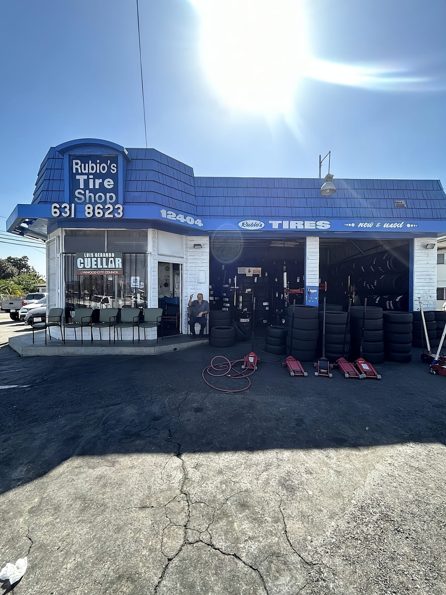

The blue tire shop on Atlantic, finally findable. La llantera azul de Atlantic, por fin visible.
A family llantera in Lynwood with 48 five-star reviews and almost no web presence. The whole job of the site: turn a stressed driver's phone search into a call, a walk-in, or a Maps visit, in about ten seconds. Una llantera familiar en Lynwood con 48 reseñas de cinco estrellas y casi sin presencia en línea. El único trabajo del sitio: convertir la búsqueda de un conductor estresado en una llamada, una visita o una ruta en Maps, en unos diez segundos.
- RoleRol
- Design & buildDiseño y desarrollo
- LocationUbicación
- Lynwood, CA
- TimelineTiempo
- ~1 week~1 semana
- Stack
- 1 file · vanilla JS1 archivo · JS puro

People who need a tire shop are stressed, on their phone, and deciding in seconds. Quien necesita una llantera está estresado, en su teléfono y decidiendo en segundos.
Rubio's had the reviews and the reputation, but a stranger with a flat had no fast way to confirm the shop was trustworthy, open, and reachable. There was nothing online doing that work. Rubio's tenía las reseñas y la reputación, pero un desconocido con una llanta ponchada no tenía forma rápida de confirmar que el taller era confiable, estaba abierto y era localizable. No había nada en línea haciendo ese trabajo.
AudiencePúblico
Mobile-first and high-intent, often bilingual. Lynwood is ~87% Latino. The searches are urgent: "flat tire near me," "used tires Lynwood," "llantera." Prioridad móvil y alta intención, a menudo bilingüe. Lynwood es ~87% latino. Las búsquedas son urgentes: «llanta ponchada cerca de mí», «llantas usadas Lynwood», «llantera».
Emotional stateEstado emocional
Stressed, unfamiliar with the shop, deciding in roughly ten seconds. The site has to earn trust before it asks for anything. Estresado, sin conocer el taller, decidiendo en unos diez segundos. El sitio debe ganarse la confianza antes de pedir nada.
Competitive edgeVentaja
The reviews and the family/neighborhood story: the proof that a stranger can trust this shop over a faceless chain. Las reseñas y la historia familiar y de barrio: la prueba de que un desconocido puede confiar en este taller antes que en una cadena sin rostro.
Five jobs for one page.Cinco tareas para una página.
Make the phone number callable from anywhere on the page.Que el número se pueda llamar desde cualquier parte de la página.
Put social proof (reviews, ratings, family-owned) high and above the fold.Poner la prueba social (reseñas, calificaciones, negocio familiar) arriba y a la vista.
Answer "can they help me, and how do I get there?" without scrolling.Responder «¿pueden ayudarme y cómo llego?» sin desplazarse.
Serve English and Spanish from one page.Servir inglés y español desde una sola página.
Rank locally: LocalBusiness schema, nearby-city keywords.Posicionar localmente: schema LocalBusiness, palabras clave de ciudades cercanas.
Make it feel like the shop, never corporate.Que se sienta como el taller, nunca corporativo.
Kept the shop's identityMantener la identidad del taller
Blue + crayon-yellow palette, a hand-painted "price board," condensed Oswald headlines, and real photography pulled from the shop's own Google and Yelp pages.Paleta azul y amarillo crayón, un "tablero de precios" pintado a mano, titulares Oswald condensados y fotos reales de las páginas de Google y Yelp del taller.
Trust before everythingConfianza ante todo
★︎★︎★︎★︎★︎ and "trusted by local drivers" in the hero, an icon trust-strip right after, then Google/Yelp review cards moved near the top.★︎★︎★︎★︎★︎ y "la confianza de los conductores locales" en el hero, una tira de íconos de confianza enseguida, y tarjetas de reseñas de Google/Yelp subidas casi hasta arriba.
Conversion everywhereConversión en todas partes
Hero Call / Directions buttons, a persistent header call button, a repeated closing CTA, and a sticky mobile bar with live Open/Closed status. Contact is never more than a thumb-tap away.Botones de Llamar / Cómo llegar en el hero, un botón de llamada fijo en el encabezado, un CTA de cierre repetido y una barra móvil fija con estado Abierto/Cerrado en vivo. El contacto nunca está a más de un toque.
Reduced frictionMenos fricción
Honest "no upsell" pricing, free inspection, and no-appointment messaging repeated at every decision point.Precios honestos sin "ventas adicionales", inspección gratis y el mensaje de "sin cita" repetido en cada punto de decisión.
A working preview, built for the owner.Una versión funcional, hecha para el dueño.
Fully built and running, mobile-first, because that's how a driver with a flat finds it. This is the real preview I hand owners before we go live. Tap around inside the phone, or open it full-screen.Completamente construido y funcionando, prioridad móvil, porque así lo encuentra un conductor con una llanta ponchada. Es la versión real que le muestro al dueño antes de publicar. Explóralo dentro del teléfono o ábrelo en pantalla completa.
The shop's own photos, not stock.Las fotos del taller, no de banco de imágenes.


What changed.Lo que cambió.
| BeforeAntes | AfterDespués | |
|---|---|---|
| Web presencePresencia en línea | Effectively invisible: 48 five-star reviews and nothing to find online.Prácticamente invisible: 48 reseñas de cinco estrellas y nada que encontrar en línea. | A real, findable home online: a fast bilingual site that finally exists.Un hogar real y localizable en línea: un sitio bilingüe rápido que por fin existe. |
| Social proofPrueba social | One thin rating strip.Una tira de calificación mínima. | Hero stars + icon trust row + Google-style review cards, moved high.Estrellas en el hero + fila de íconos + tarjetas de reseñas estilo Google, subidas arriba. |
| ContactContacto | Header call button only.Solo un botón de llamada en el encabezado. | Header + hero + sticky mobile bar + repeated closing CTA.Encabezado + hero + barra móvil fija + CTA de cierre repetido. |
| Open statusEstado abierto | Static hours table.Tabla de horarios estática. | Live "Open now / Closed now" indicator.Indicador en vivo «Abierto ahora / Cerrado». |
| Story / AboutHistoria | None.Ninguna. | Personal family story + owner sign-off.Historia familiar personal + firma del dueño. |
| "Why us"Por qué nosotros | None.Ninguno. | Six trust-based reasons.Seis razones basadas en confianza. |
| SEO | noindex, no schema.noindex, sin schema. |
Indexable, LocalBusiness JSON-LD, OG tags, nearby-city keywords.Indexable, JSON-LD LocalBusiness, etiquetas OG, palabras clave de ciudades cercanas. |
One file, no buildUn archivo, sin build
A single dependency-free index.html (~57 KB) with inlined CSS and ~90 lines of vanilla JS. Deploys straight to GitHub Pages.Un solo index.html sin dependencias (~57 KB) con CSS en línea y ~90 líneas de JS puro. Se publica directo en GitHub Pages.
Bilingual by toggleBilingüe con un toque
A CSS-driven data-lang switch shows/hides EN/ES, persisted to localStorage and auto-detected from the browser.Un interruptor data-lang en CSS muestra/oculta EN/ES, guardado en localStorage y detectado del navegador.
Live open/closedAbierto/cerrado en vivo
Status computed live in America/Los_Angeles and mirrored in both the hours table and the sticky bar.El estado se calcula en vivo en America/Los_Angeles y se refleja en la tabla de horarios y en la barra fija.
Fast & accessibleRápido y accesible
Lazy-loaded images, fetchpriority hero, display=swap fonts, skip link, ARIA labels, 44–52px tap targets, reduced-motion support. Targets 95+ Lighthouse.Imágenes con carga diferida, hero con fetchpriority, fuentes display=swap, enlace para saltar, etiquetas ARIA, áreas táctiles de 44–52px, soporte de movimiento reducido. Apunta a 95+ en Lighthouse.
A driver with a flat knows in seconds: this shop is trustworthy, they can help, here's how to reach them.Un conductor con una llanta ponchada sabe en segundos: este taller es confiable, pueden ayudar, así los contacto.
Every section produces one of three actions: call, get directions, or read the reviews.Cada sección genera una de tres acciones: llamar, cómo llegar o leer las reseñas.